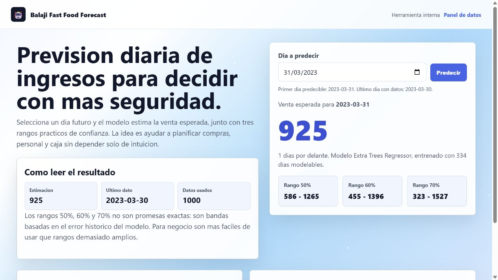
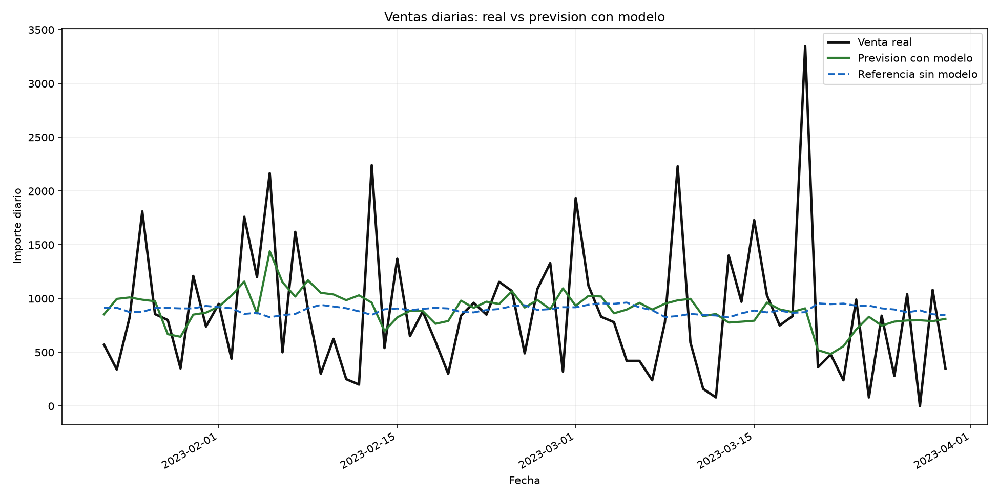
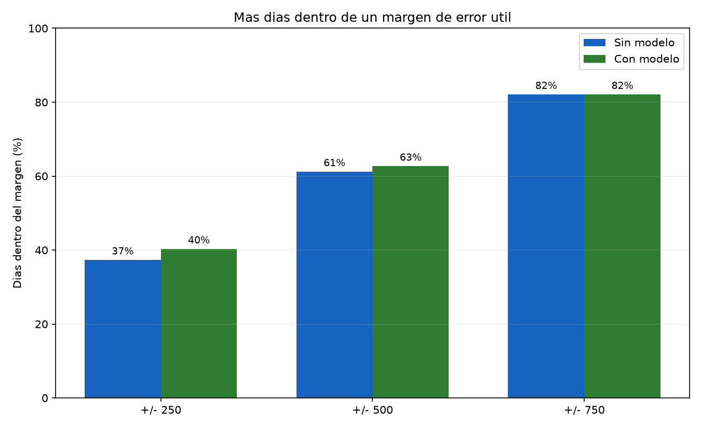

Balaji Fast Food
Prevision diaria de ventas
Una herramienta practica para anticipar ingresos, preparar operativa diaria y tomar decisiones con mas contexto que una media historica.

El punto de partida
Las ventas diarias cambian demasiado para decidir solo con intuicion
El negocio no necesita una cifra perfecta: necesita una referencia mejor para planificar compras, personal y expectativas de caja.
- El historico permite detectar patrones que no se ven dia a dia.
- El modelo compara cada fecha con comportamiento reciente y calendario.
- La prevision se usa como apoyo, no como sustituto del criterio comercial.
Resultado principal
El modelo mejora la referencia base y reduce error esperado
Si un mes genera alrededor de 30 decisiones diarias, esta mejora convierte datos historicos en margen operativo: menos compras a ciegas, mejor preparacion y una expectativa mas realista.
Comparacion visual
Real, modelo y baseline en el periodo de prueba

Aciertos utiles
La precision se entiende mejor por margenes de decision

No buscamos adivinar el numero exacto; buscamos acercarnos lo suficiente para decidir mejor.
Por eso la lectura comercial debe centrarse en rangos utiles: cuando el margen aceptable crece, el modelo aporta una vision mas estable para la operativa diaria.
Producto
Una pantalla simple para preguntar por cualquier dia futuro
Seleccionar fecha
La herramienta calcula el camino esperado desde el ultimo dato disponible hasta el dia elegido.
Ver estimacion
Se muestra una cifra central y rangos de confianza practicos del 50%, 60% y 70%.
Actualizar datos
El panel privado permite cargar nuevas ventas y reentrenar cuando haya suficiente informacion nueva.
Lectura del resultado
La prevision ayuda a preparar el dia, no a prometer una caja exacta
- La cifra central es el escenario mas probable segun el historico.
- Los rangos dan una zona de seguridad para decisiones de compra o personal.
- Cuando el negocio cambie por promociones, eventos o clima, conviene ajustar la lectura con criterio humano.
En este historico el modelo tiende a ser algo positivo frente a la realidad. Comercialmente eso significa que se debe interpretar como una ayuda para prepararse, manteniendo prudencia en decisiones de coste.
Valor del mantenimiento
Cada semana y cada mes de datos aportan mucho valor
El modelo aprende mas rapido cuando el negocio mantiene un flujo de datos constante.
Con mas historico no solo hay mas filas: hay mas patrones de semanas buenas, semanas flojas, cambios de demanda y comportamientos repetidos.
Operacion recomendada
Rutina sencilla para que la herramienta mejore con el negocio
Cierre
Recomendacion comercial
Usar el modelo desde ahora como apoyo diario y convertir el mantenimiento de datos en una mejora recurrente.
- Ya mejora la referencia base sin exigir cambios complejos al negocio.
- Da una cifra y rangos faciles de entender para planificar ingresos.
- Su valor aumenta especialmente con cada nueva semana o mes de historico.